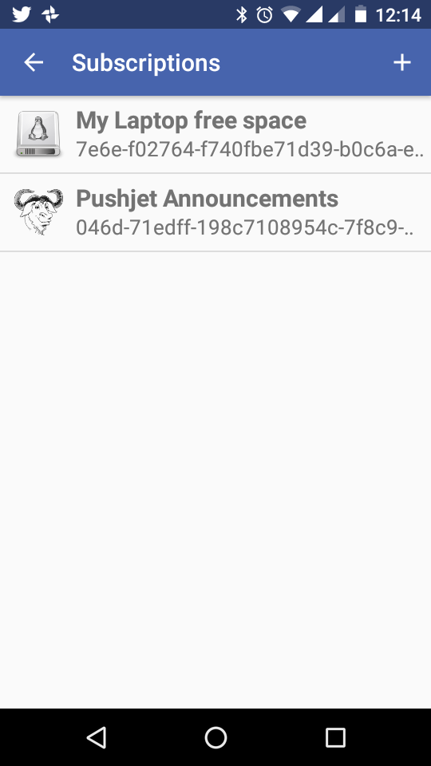
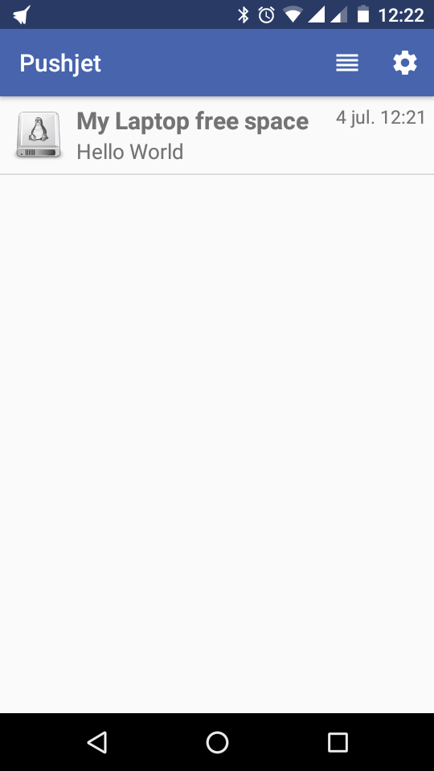
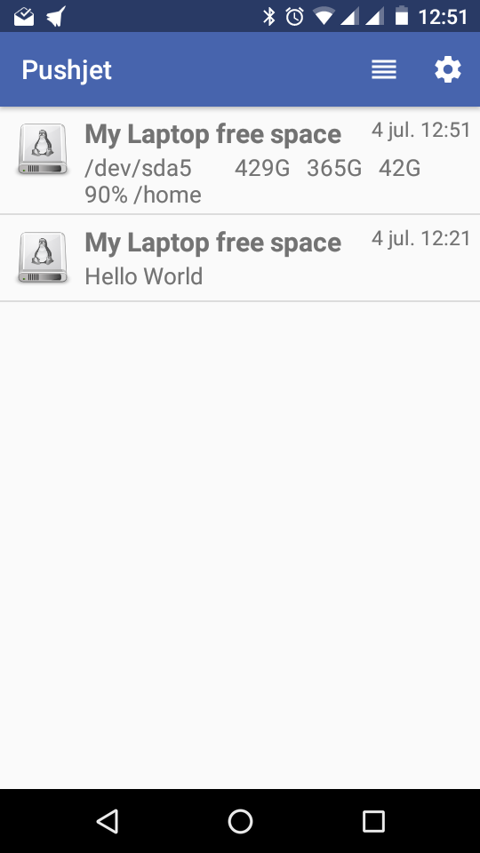

Send notifications to your phone with PushJet
Recently, I've faced the need of monitoring some basic checks in my laptop and wanted to be rapidly notified about them. Basically I have a small script scheduled in my crontab and want it to clearly notify me when it returns errors. My real task was a little bit more complicated, but let's say I just wanted to check the free space on root partition.
The first obvious option was to just send an email I can see in my mobile phone, but that was boring and due to the amount of mails I receive everyday it would be easy to ignore the notification. Another option would be to write a telegram bot, but I fond the solution a little bit oversized for my needs.
I just want to easily send a push notification in my android phone. It should be easy!
After a little bit of googling I found Pushjet as the perfect tool for my needs:
- It's free as in free beer and offered as a service.
- It's free as in freedom (GPL compatible) and I could host my own broker if needed (mainly for security reasons).
- It has a damn simple python library to use it.
So let's start with it.
Monitoring the free space in my machine¶
First of all let's get from python the free space I have in my laptop:
import subprocess
df = subprocess.Popen(["df", "-h"], stdout=subprocess.PIPE)
output = df.communicate()[0].decode()
for line in output.splitlines()[1:]:
if int(line.split()[-2].split('%')[0]) >= 75:
print(line)
Basically, this lines of code print "df -h" output lines if the free space is less than 50%. In this case you can see my home partition has only a 10% of free space, so I would like it to be notified.
Setting up Pushjet services¶
Now we'll start with pushjet itself.
First of all, we need to install the pushjet python api via pip:
! pip install --upgrade pushjet
Now we have to create a service (a communication channel):
import pushjet
help(pushjet.Service.create)
As you can see, we just need to give it a name and (optionally) an icon. I've choosed this one:

my_service = pushjet.Service.create(
"My Laptop free space",
"http://icongal.com/gallery/image/338109/linux_hdd_hd_os_hardware_disk.png")
At this point, we already have a my_service object ready to send messages. It has two relevant keys (a public and a private one) and that's all the information we need to send and receive the messages.
print('Secret Key: %s' % my_service.secret_key)
print('Public Key: %s' % my_service.public_key)
Save those keys in a secure place.
Android client subscription¶
I want to receive the notifications in my android phone. Just install the app from Google Play.
Once you have the app installed and opened you'll have to subscribe to the service. For that purpose, you'll only need the previously given publick key as a token. The app allows you to enter it manually or scan a QR. As I'm too lazy to enter a so long key I'll ask qrcode python library to generate a QR for me:
import qrcode
img = qrcode.make(my_service.public_key)
img.save('pushjet_public_key.png')

So now we can just scan the token and create a new subscription:

Sending notifications from Python¶
Now we'll just send the notifications, we just need the pushjet libraries we've allready installed and the secret key we've previously saved.
service = pushjet.Service(my_service.secret_key)
service.send("Hello World")
And that's it, you'll have a beautifull notification in your phone!

After all, we want to put in the messages useful information, going back to the first example we can substitute the print statement with call to Pushjet's service.send.
A full functional script to be run periodically could be:
import pushjet
import subprocess
secret_key="bbed46983e4ed8fbaea690f1177eec6b"
service = pushjet.Service(secret_key)
df = subprocess.Popen(["df", "-h"], stdout=subprocess.PIPE)
output = df.communicate()[0].decode()
for line in output.splitlines()[1:]:
if int(line.split()[-2].split('%')[0]) >= 75:
service.send(line)

Now you only have to think about your own real-world use cases.
Share on: